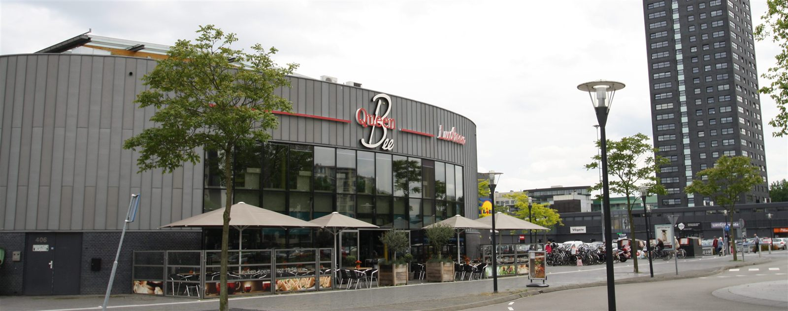

Cadeaubonnen
Op zoek naar een leuk cadeau voor een verjaardag, Moeder- of Vaderdag, Sinterklaas of de kerst? Een cadeaubon van Queen Bee is verkrijgbaar vanaf € 25,00.
Cadeaubon aanvragenLunchroom & restaurant in Winkelcentrum Woensel XL, Eindhoven
Van een ontbijtje tot een uitgebreid diner, van een kop koffie met gebak tot een high tea met vriendinnen. Binnenlopen mag altijd: dan kijken we samen of er plaats is.
Keuken open ma t/m za vanaf 10.30 uur, woensdag vanaf 10.00 uur
Van ontbijt tot diner, de hele dag door. Heeft u een allergie of een dieetwens? Laat het ons weten.
Breakfast, Frühstück, petit déjeuner: 2 gebakken eieren met spek, 2 sneden brood met boter, jam, ham en kaas, 1 pistolet en een croissantje, verse jus d'orange en koffie, cappuccino of thee.
Met curry, ketchup of mayonaise.
Elk kindermenu met een Ben & Jerry's ijsje na.
Geserveerd met warme groenten en rauwkost, met keuze uit friet, aardappelkroketjes of rijst. Sauzen: peper-, champignon-, rode wijn-, cocktail- of knoflooksaus; mayonaise, ketchup, curry of een extra saus.
Diverse soorten gebak: kijk even in de vitrine.
Alle koffies zijn ook cafeïnevrij verkrijgbaar of met havermelk.
Wijn ook per fles.
Coca-Cola, Coca-Cola Zero, Sprite, Fanta Orange, Chaudfontaine blauw of rood, bitter lemon, tonic, ginger ale, cassis, Rivella, Chocomel, Fristi, appelsap en tomatensap.
Jenever, vieux, gin, wodka, Bacardi rum, port en sherry. Likeuren: Tia Maria, Amaretto, Baileys, Licor 43, Grand Marnier, Kahlúa, limoncello en tequila. Whisky: William Lawson, Johnnie Walker Red en Black, Jack Daniel's en Jameson. Cognac: Rémy Martin.
De actuele prijzen hoort u graag in de zaak of via 040-2480700. Download de menukaart (pdf)
Lekker bijkletsen met thee en iets lekkers, of uitgebreid borrelen met een heerlijk assortiment aan wijnen of bieren. Niet voor niets erg populair, ook als cadeau.
Reserveren en vooraf betalen is altijd nodig. Minimaal 2 personen, gemiddeld 2,5 uur. Heeft u een allergie of een dieetwens, laat het ons weten.
Reserveer uw high teaOp zoek naar een leuk cadeau voor een verjaardag, Moeder- of Vaderdag, Sinterklaas of de kerst? Een cadeaubon van Queen Bee is verkrijgbaar vanaf € 25,00.
Cadeaubon aanvragenBij een reservering houden we graag rekening met uw wensen, zoals een dieet, een lactose- of glutenallergie of vegetarisch eten. We overleggen graag wat de mogelijkheden zijn.
In Queen Bee vindt u een gratis hotspot: Queen Bee hotspot. Betalen gaat bij voorkeur met de pin (Maestro, Mastercard, ook contactloos).
Queen Bee is ook te huren, en kan in zijn geheel worden afgehuurd. In overleg kijken we of dat op de gewenste tijden kan; ook op gesloten zondagen. Wij hebben de ervaring in huis en zorgen ervoor dat alles geregeld wordt.
Uw feest kan ook bij u thuis of op uw bedrijf: partijen tot 200 personen.
Servies, glaswerk, meubilair, koffieapparatuur en meer.
Sinds 25 augustus 2020 spaart u bij ons digitaal: voor elke bestede euro een Piggy-punt, in te leveren tegen beloningen. Per 1 januari 2027 werven we geen nieuwe leden meer en worden er geen punten meer bijgeschreven. In januari, februari en maart 2027 wisselt u uw punten in met 10% cadeau, en gespaarde punten blijven heel 2027 geldig.
Voor de keuken en de bediening zoeken we flexibele, gastvrije collega's die doordeweeks en in het weekend kunnen, in een jong, super gezellig en dynamisch team. Geen diploma voor de keuken? Dan kunt u gratis de opleiding tot kok volgen aan De Rooi Pannen of het Summa College. We zijn een erkend leerbedrijf (s-bb) en hebben ook plek voor stagiairs.
Stuur uw cv met pasfotoReserveer een tafel, een high tea of een cadeaubon. Binnenlopen kan natuurlijk ook: dan kijken we samen of er plaats is.
Winkelcentrum Woensel 406
5625 AG Eindhoven
In Winkelcentrum Woensel XL.
1 november 2026 tot 1 april 2027
| Maandag | 10.30 – 19.00 |
|---|---|
| Dinsdag | 10.30 – 19.00 |
| Woensdag | 10.00 – 19.00 |
| Donderdag | 10.30 – 19.00 |
| Vrijdag | 10.30 – 20.00 |
| Zaterdag | 10.30 – 19.00 |
| Koopzondag | 11.00 – 19.00 |
Koopzondagen: de eerste en laatste zondag van elke maand.
